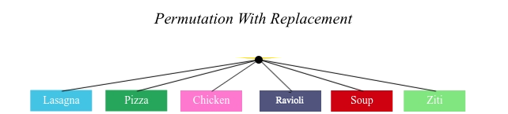
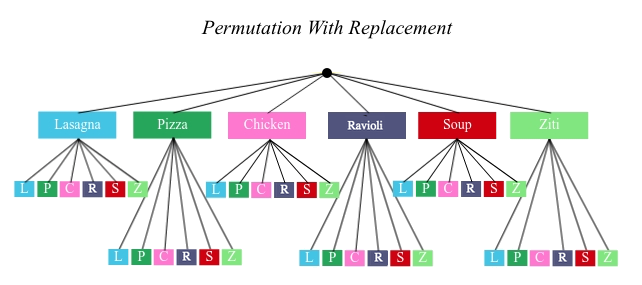
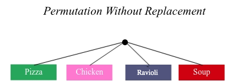
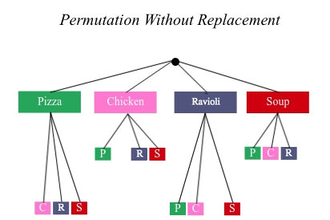
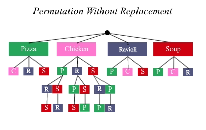

Permutations
(Also available in Pyret)
Students explore the concept of permutations, computing the possible number of outcomes when choosing n items from m possibilities in a variety of real-world situations.
|
Lesson Goals |
Students will be able to…
|
|
Student-facing Lesson Goals |
|
|
Materials |
permutation-
the number of possible arrangements in a collection of items where the order of the selection matters (ABC and CBA would be considered different permutations)
🔗Permutation with Replacement
Overview
Students are introduced to the concept of permutation (with replacement). They compute a number of permutations by hand using tree diagrams, then learn the formula for computing permutations with replacement.
Launch
{kind=link}
Luigi’s Family Restaurant is about to open, and it’s going to be the hottest restaurant in town. They have a menu with six different dishes, and they plan to offer a four-course "Italian Safari" dinner for the low-low price of $9.95 per person. The gimmick is that diners can choose the order of the courses: you might start with Lasagna, but your friend can start with the Chicken Parmesan, and so on. And if your friend happens to really, really like Chicken Parmesan, they can choose to eat it for all four courses!
They advertise "an almost-endless number of dining experiences". In fact, Luigi himself guarantees free food for life for anyone who can eat every possible configuration. If you ate dinner there every night, how long would it take to try each one? In other words, how many ways can you reshuffle those four courses?
In Permutations, order matters!
Luigi isn’t going to give away free food just because you order four courses - he wants you to order four courses in every possible order! In situations where order matters, the set of possible options is called permutations.
With or without replacement?
In some restaurants, you’re not allowed to order the same item for more than one course. In other words, once you’ve picked lasagna, it’s no longer on the menu for your next course! This is called permutation without replacement.
Luigi is a nice guy, so once you order lasagna it is "replaced" with the option to order it again for the next course! This is called permutation with replacement.
With six dishes to choose from and four courses to eat, how many permutations are there? How many meals would we have to eat, to get free food for life?
Investigate
Luigi has six possible dishes to choose from. Discuss:
-
How many permutations could there be for a 1-course dinner?
-
How many permutations could there be for a 2-course dinner?
-
How many permutations could there be for a 3-course dinner?
-
Is there a pattern here?
It’s useful to use tree diagrams, so we can see what our possible choices are. A tree diagram is a way of tracking a series of events. In this case, each course we choose is an event.
Let’s diagram all permutations for a 1-course meal. With six menu items, a 1-course meal could be Lasagna, Pizza, Chicken, Ravioli, Soup or Ziti. That means the set of all possible 1-course permutations has six different meals. In less than a week, we’d have tried all the possibilities!

{kind=link}
But what about a 2-course meal? Each of our 1st-course choices has another tree underneath it! After we’ve picked our first course, how many options do we have for the second? If we choose Lasagna for our first course… we can choose it again for the second course or we can choose any of the other options, which means we still have six choices. In other words, someone could order Lasagna & Lasagna (L-L), Lasagna & Pizza (L-P), Lasagna & Chicken (L-C), Lasagna & Ravioli (L-R), Lasagna & Soup (L-S), or Lasagna & Ziti (L-Z). That’s six possible orders with Lasagna as the first course. Each of the other first course options also comes with six possible second course order options… that’s 6 × 6 ! So, instead of taking six days to try all the permutations, now it takes 36 days - more than a month!

{kind=link}
Every time we get to make a choice, each endpoint in our tree sprouts six more branches.
-
For practice with tree-diagrams and permutations, complete Tree Diagrams.
-
How many permutations would there be in a 3-course meal?
We had 36 possible 2-course meals, so choosing a third course means that each "endpoint" of our 2-course meal tree now has six possible branches! 6 × 6 × 6 = 6^3 = 216 possible 3-course meals.
For a 4-course meal, we have a four-level tree with six branches at every level! That’s 6 × 6 × 6 × 6 = 6^4 = 1296 possible permutations!
The number of permutations is computed based on two things: . The number of possible menu items (lasagna? Chicken? Soup?) . How many times we get to choose. (1-course meal? 3-course meal?)
Let’s see this as a function:
permute\mbox-w\mbox-replace(items, choose) = choose^items
permute\mbox-w\mbox-replace(6, 1) = 6^1 = 6 We have 6 possible one-course meals…
permute\mbox-w\mbox-replace(6, 2) = 6^2 = 36 We have 36 possible two-course meals…
permute\mbox-w\mbox-replace(6, 3) = 6^3 = 216 We have 216 possible three-course meals…
How many permutations are there for a 4-course meal chosen from Luigi’s 6-item menu?
permute\mbox-w\mbox-replace(6, 4) = 6^4 = 1296
With four courses, it would take more than 3.5 years to try them all — if we ate dinner at Luigi’s every night!
In Pyret, we can raise a 6 to the power of four with the num-expt function. For example, num-expt(6, 4) will compute 6^4. In the Definitions Area, use the Design Recipe to define num-permute-w-replace, which consumes the number of items and the number of choices and produces the number of possible permutations (with replacement).
Synthesis
What are some other examples of permutation? (Password strength, guessing combination locks…)
🔗Permutation without Replacement
Overview
Students build on their understanding of permutation, now extending it to situations without replacement. They compute a number of permutations by hand using tree diagrams, then learn the formula for computing permutations without replacement.
Launch
After a few months, Luigi realizes that he’s losing money. He could either raise his prices, or streamline the cooking process. His daughter observes that there’s no way to predict how many ingredients to buy, since some people might want four courses of Soup and others might want four courses of ziti. Without being able to predict the ingredients, Luigi winds up buying too much of one thing and not enough of another - resulting in a lot of wasted food and unhappy customers!
Luigi proposes an important change to his "Italian Safari deal": No item can be ordered twice.
He also decides to simplify his menu even further, down to just four different options.
With no one ordering four of the same thing and far fewer choices to make, it’s a lot easier to predict what to buy, so it will waste less food and save Luigi a lot of money.
Now how long would it take to try every permutation?
Let’s start by drawing the tree diagram for 1st place:

{kind=link}
There are four possible items we could eat for our first course, so we have 4 possible branches. After we eat that course, it’s time to order the second course! How many branches are there for the second course, under each first course choice?

{kind=link}
We can’t order the same thing twice so once we’ve eaten Pizza for the first course, there are only three possible items left to choose from: Chicken, Ravioli and Soup. If we start with Chicken, we can’t order Chicken again, but we can choose from Pizza, Ravioli & Soup for our second course. No matter what we choose for our first course, we still have three choices left for our second course. This is called permutation without replacement. Now there are only 4 × 3 = 12 permutations, instead of the 16 we’d have with replacement.
We can visualize our four courses as a four-level tree, with each set of branches getting smaller and smaller until there’s only one option left. In the tree diagram below, you can see a partial drawing of all four courses.

{kind=link}
If we start with Chicken, we can order:
-
Chicken, Pizza, Ravioli & Soup
-
Chicken, Pizza, Soup & Ravioli
-
Chicken, Ravioli, Pizza & Soup
-
Chicken, Ravioli, Soup & Pizza
-
Chicken, Soup, Ravioli & Pizza
-
Chicken, Soup, Pizza & Ravioli
That’s six different permutatons that start with Chicken, and we have four different other possible meals to start with.
We can compute the number of permutations-without-replacement by multiplying the number of choices as they shrink after each course: 4 × 3 × 2 × 1 = 24.
Factorial This lesson assumes that students are familiar with factorial notation (n!). To teach this lesson without students knowing about factorials, you will need to skip the function notation that follows. This is feasible, but not recommended. Reminder: 0! = 1 Click here for an explanation. |
Now we could try all the permutations in just under a month!
Luigi decides this makes it too easy, and now that his kitchen is running smoothly he decides to bring back the original six-item menu.
In this situation, there might be six items on the menu, but we want to stop multiplying after the first four items are chosen.
6 × 5 × 4 × 3 = 360
We can write this by starting with our factorial notation from before (where every number from 6 to 1 is multiplied), and then "undoing" the 2 × 1. This takes the form of dividing:
( 6 × 5 × 4 × 3 × 2 × 1 )/( 2 × 1 ) = 6!/2! = 360
With this number of possible combinations, it would take almost a year to try them all! And with less wasted food and a faster kitchen, Luigi has a lot of happy customers and a lot of money in the bank.
We can write this relationship as a function:
permute\mbox-no\mbox-replace(items, choose) = items!/( (items - choose)! )
For practice, complete the Permutation worksheet.
In Pyret, we can compute the factorial of 6 with the factorial function. For example, factorial(6) will compute 6 × 5 × 4 × 3 × 2 × 1. In the Definitions Area, use the Design Recipe to define num-permute-wo-replace, which consumes the number of items and the number of choices and produces the number of possible permutations (without replacement).
Synthesize
-
What is the difference between permutation with or without replacement?
-
What are some real-world examples of each?
🔗Additional Exercises:
-
Permutations and Combinations Starter File provides students with a chance to view all the permutations and combinations for Luigi’s menu. }
These materials were developed partly through support of the National Science Foundation,
(awards 1042210, 1535276, 1648684, and 1738598).  Bootstrap by the Bootstrap Community is licensed under a Creative Commons 4.0 Unported License. This license does not grant permission to run training or professional development. Offering training or professional development with materials substantially derived from Bootstrap must be approved in writing by a Bootstrap Director. Permissions beyond the scope of this license, such as to run training, may be available by contacting contact@BootstrapWorld.org.
Bootstrap by the Bootstrap Community is licensed under a Creative Commons 4.0 Unported License. This license does not grant permission to run training or professional development. Offering training or professional development with materials substantially derived from Bootstrap must be approved in writing by a Bootstrap Director. Permissions beyond the scope of this license, such as to run training, may be available by contacting contact@BootstrapWorld.org.